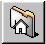

The KDE File Manager
If you're accustomed to using Windows or a Macintosh, you're going to feel comfortable using KDE. In large part, that's due to the KDE File Manager, known as KFM.
Like GNOME's file manager, KFM is a graphical tool you can use to view and work with directories and files.
 | Useful online and offline |
|---|---|
Because KFM uses HTML to display information, it serves as a decent Web browser, as well as a browser for your system. Just type a Web address (or, URL) into the Location bar when you're online, and you'll jump to your chosen website. Similar to the GNOME file manager, you can also open FTP sites with the Location bar. |
Using KFM
The easiest ways to start KFM are:
From the Main Menu K icon -- Click on the Home Directory entry.
From the Panel -- Click on the Home Directory icon, which looks like: 
When your home directory window opens, you'll see something similar to Figure 9-6. By default, the view contains icons and links to associated files on your system. You can change this view, in the View menu.
In fact, you have quite a few choices for viewing files and directories in the content area; when you select (or deselect) a choice, the content area will refresh with your new view. Under View in the menu, you can select:
Show Hidden Files -- This option shows the hidden files (also called "dot files"), mostly configuration files.
Show Tree -- Gives you a tree view, showing you where your login directory is in the system and allowing you to navigate to other directories by clicking on other folders. Similar to Macintosh's file manager scheme, when you click on a triangle pointed at a folder, it will expand a folder, revealing other folders within. Click again on the triangle, and the tree will collapse, and the angle will return to its initial position, like:

Show Thumbnails -- If you have images in a directory, selecting this option will show you tiny representations of them. This view is useful if you keep family photos or artwork.
HTML View -- Select this view if you want to see a directory as a Web page. This can be fun if you know HTML, or want to learn how to write a Web page. All you have to do is name your file index.html, and place your content as links in the file. When KFM opens the directory, it will open the index.html file.
Text View and Long View -- Show you a directory's contents in detail, including filenames, permissions, owner, group, size and modification time. While these two views are essentially the same, small icons are included next to the listed item in Long View to indicate what that item represents.
Short View -- Presents a list of the contents, with small icons. Doesn't present details such as owner, permissions or modification time.
Click once on a file to open the file in its associated application. For example, the file signature.txt is a text file. Click on it to open kedit, KDE's text editor.
To open a directory, click once on the file folder.
| Express yourself with backgrounds |
|---|---|
Think file managers are boring? Try livening up the content area with a colorful image background. Just right-click inside the content area of a KFM window, go to the Dir tab, and you can change your background. If you want to use one of the included backgrounds, select an image from the drop-down list. Note, however, that some of the included backgrounds will probably put a strain on your eyesight -- and your sense of good taste! With names such as spoiled_sprouts and ringworm_circus, you shouldn't expect a soothing visual experience. You can also select a background of your own by clicking on the Browse button and picking an image elsewhere on your system (for example, an image file in your /home directory). If you prefer to change only the color, you can modify the color settings by going to the menu and clicking Options => Configure File Manager. Change the background by selecting the Color tab; you can change the fonts by selecting the Font tab. |
Navigation
If you've used a Web browser or file manager before, you'll feel right at home moving around with KFM. You can type the path location of a file (and the address of a website or FTP site) in the Location bar. Above the Location bar, icons on the Navigation bar help you quickly move to other directories. Briefly, here's what the icons mean:
The arrow up will take you "up" the directory tree. For example, if you're in /home/newuser and you click on the up arrow, you will move to /home; click once more, and you'll be at /, or root (the root of your filesystem, that is, not the root account's login directory).
Click on the arrow pointing left to take you to a previously viewed directory. Click on the arrow pointing right to move forward through your navigation history.
To jump to your home location, such as /home/newuser, just click on the home icon.
Click on the circular arrows to refresh your view of the current content area.
The next two icons, of pages and a page with a clipboard, are for copy and pasting. You can copy and paste selected text in the content area, URLs or file locations from the Location bar, and more. If you're viewing Web pages, for example, you can copy selected content, open a text editor (Main Menu K => Applications) and paste the content into the editor.
To get help, click on the question mark.
To stop loading a page or directory in the content area, click on the traffic light.
To open a new KFM window, just click on the KDE icon (which looks like a gear) on the far right of the Navigation bar.
Using Disk Navigator
If you want to access a recent document or application, Disk Navigator should be the first place to turn. Using Disk Navigator, you can view directories and files on your system and return to previous files.
You can find Disk Navigator in the main menu (see Figure 9-7).
To work with Disk Navigator, just hold your mouse cursor over the application on the main menu; a second menu will open, showing the files and folders to which you have access. Under Root/, for example, you'll find directories on your system from root of the directory tree. Under the KDE/ directory, you'll find folders that point to system documentation, games, libraries, and more.
 | Be careful! |
|---|---|
Unless you know what a file is for, use caution before trying to open or modify any file. |
Drag and Drop Open, Move and Copy
Keeping important documents and applications within easy reach is simple with KFM. To open a text file, for example, you can "drag" it from the content area of KFM by left-clicking on it and holding your mouse button down while you drag it. If you "drop" the file in an open text editor, it will open, ready for you to modify its contents.
In the same way, you can drag and drop files from the content area to your desktop or to other folders. When you reach your destination, a pop-up menu will offer you the choice of copying, moving or linking the file. If you select Link from the menu, any changes you make to a file in its new location will be reflected in the original location. A link, then, is like a shortcut to the original file.